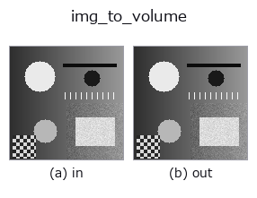
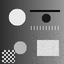

bridge op• 데이터 종류: image → volume
• 호출: fullseye.apply(img, "img_to_volume", a=0.5, b=0.5)(2-D 는 이미지 1 장 + 스칼라 노브 2 개 a,b∈[0,1] 모델)

*그림은 128×128 합성 입력에서 실제로 실행한 출력. 왼쪽이 입력, 오른쪽이 출력. 점군은 위에서 본 산점도(밝기 = z), 1-D 열은 꺾은선, 볼륨은 z 방향 최대값 투영, 동영상은 가운데 프레임, 복소 영상은 진폭이며, 그림이 되지 않는 반환값은 값 자체를 표시한다.*
노브 a 를 훑기(0.1 / 0.5 / 0.9, 다른 노브는 기본값):
▸ img_to_volume: 노브 a 스윕 (문서 사이트)
노브 b 를 훑기(0.1 / 0.5 / 0.9, 다른 노브는 기본값):
▸ img_to_volume: 노브 b 스윕 (문서 사이트)
다른 영상에서도(합성 장면 / 사진 / 동전. 윗줄이 입력, 아랫줄이 그 출력. 노브는 기본값):
▸ img_to_volume: 다른 입력 이미지 (문서 사이트)
*4열은 컬러 (H,W,3) 입력. 이 op는 채널을 넘나들지 않고 컬러를 다룰 수 있다(색 채널을 세 번째 공간축으로 컨볼루션하지 않음).*
움직임(GIF: 프레임 / 시점 / 슬라이스를 차례로. 정지 그림이 완성형이고 GIF는 보조):

영상을 높이장으로 밀어내어 (D,H,W) 볼륨(z 선두)으로 만든다.
복셀 (z, y, x)는 그 높이가 화소의 높이 이하이면 화소 값, 넘으면 0:
vol[z, y, x] = img[y, x] if z <= img[y, x] * s * (D - 1) else 0. 즉 높이장의 “속이 꽉 찬” 고체(지형·계단·압출 부품)로, 체적 계열(vol_dilate / vol_erosion_ball / macro_vol_denoise …)을영상 1장에서 시험해 볼 수 있다. 축 순서는 3-D 대장의 규약대로 (depth, row, col).
• a → 높이 배율 s = 0.25 + 1.75 * a(a=0.5에서 1.125. 1을 넘은 분은최상단 D-1에서 포화).
• b → 단 수 D = 8 + 2 * int(b * 28)(b=0.5에서 36, b=0에서 8, b=1에서 64).
• 반환값: (D, H, W) float64, 값 범위는 입력과 같다. z=0의 바닥면은값 > 0인 화소로 모두 채워진다(높이 0이어도 바닥면에는 올라간다).
• 샘플 데이터 카탈로그(DL URL / 라이선스) —— 2-D 는 skimage.data(BSD/public)+ 합성, 3-D 는 실데이터 소스(Stanford/PDS 등)의 DL URL.
• 연산자의 내력·참고문헌 —— 이 연산자 족의 바탕이 된 연구/기법의 출처.
• 알고리즘의 정전(저자·연도)과 용도는 위의 패밀리 사용 가이드에 적혀 있습니다.
아래 프로그램은 실제로 실행됨을 확인했습니다(그림과 같은 입력). Studio 도움말에서는 이 블록이 버튼이 되어 즉시 불러와 실행할 수 있습니다.
img_to_volume 0.50 0.50
• gallery2d_bridge — py -3.11 examples/gallery2d_bridge.py
volume 를 입력으로 받는 것)identity · vol_gaussian · vol_median · vol_erode · vol_dilate · vol_threshold · vol_reg_dilate · vol_reg_erode
bridge)img_to_points · img_to_keypoints · img_to_signal · img_to_projection_profile · img_to_counts · img_to_matrix · img_to_video · img_to_lightfield
*Provenance: ops.py — 2D 연산자 레지스트리. 이 op 노트는 tools/opdocs.py md 가 자동 생성합니다(직접 편집하지 마세요).*
© 2026 Kazufumi Furuse — Fullseye operator documentation. Licensed under Apache-2.0.